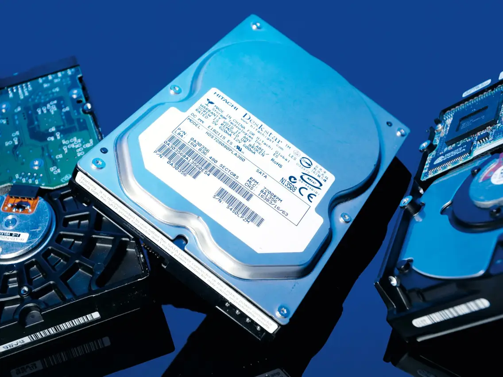
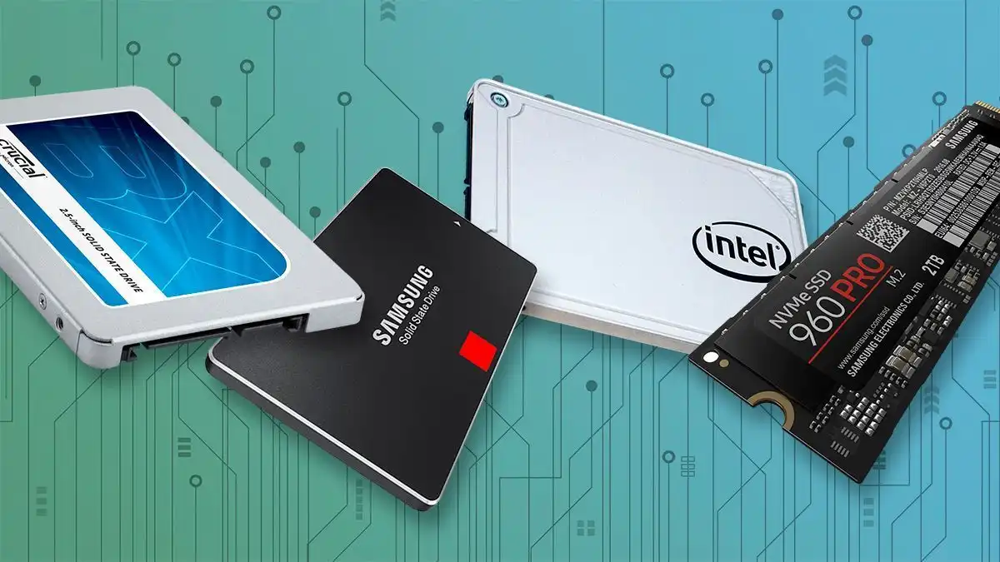

There are two types of storage, SSDs, and HDDs. The general difference
between the two is that the SSDs are more expensive for less storage, but
that storage loads extremely quickly. And the HDD is the opposite, giving
more storage for a cheap price, but at the cost of slow speeds. This might
make it sound like it’s completely pointless to buy an SSD, but there are
reasons to, which will be explained later on.
HDD (Hard Drive)

A HDD, or hard drive, is where most of your data will be stored. This is
because we always have a lot of photos, documents, files, and more that we
want kept in one place, and the HDD is the place for that. This is because
we can get a lot of storage for a lower amount of money, and we don’t care
how long it takes to load up these files. We aren’t accessing these files
multiple times a day on our computer. We just want them stored. So waiting
an extra 30 seconds or so to bring them up isn’t of much concern. Usually,
people get a 2tb hard drive, because it’s so much space for such a low cost.
But you can always get more down the line.
An SSD is where we typically want to put the applications that we want to be
loaded quickly, because we access them so often. The most common being the
operating system. Every time you go to start up your computer, the computer
needs to start up the operating system that the computer uses (which is almost
always Windows). This is a complicated process! And we’re always turning our
computer on and off. So we want to make sure that when we boot up our computer,
it doesn’t take a long time to turn on. The same goes for certain applications
that you use frequently, such as an editing software, or a game, or pretty much
anything you use multiple times a day that you don’t want to waste time waiting
for it to load. The amount you get is up to you, and your budget. The least
amount is usually 128 gigabytes, which is enough to store the operating system,
and a few other extra applications. You could go upwards from there, but keep
in mind that the price goes up with it.
SSD (Solid State Drive)

An SSD is where we typically want to put the applications that we want to be
loaded quickly, because we access them so often. The most common being the
operating system. Every time you go to start up your computer, the computer
needs to start up the operating system that the computer uses (which is almost
always Windows). This is a complicated process! And we’re always turning our
computer on and off. So we want to make sure that when we boot up our computer,
it doesn’t take a long time to turn on. The same goes for certain applications
that you use frequently, such as an editing software, or a game, or pretty much
anything you use multiple times a day that you don’t want to waste time waiting
for it to load. The amount you get is up to you, and your budget. The least
amount is usually 128 gigabytes, which is enough to store the operating system,
and a few other extra applications. You could go upwards from there, but keep
in mind that the price goes up with it.
An SSD is where we typically want to put the applications that we want to be
loaded quickly, because we access them so often. The most common being the
operating system. Every time you go to start up your computer, the computer
needs to start up the operating system that the computer uses (which is almost
always Windows). This is a complicated process! And we’re always turning our
computer on and off. So we want to make sure that when we boot up our computer,
it doesn’t take a long time to turn on. The same goes for certain applications
that you use frequently, such as an editing software, or a game, or pretty much
anything you use multiple times a day that you don’t want to waste time waiting
for it to load. The amount you get is up to you, and your budget. The least
amount is usually 128 gigabytes, which is enough to store the operating system,
and a few other extra applications. You could go upwards from there, but keep
in mind that the price goes up with it.
Pricing
| Storage Device |
Cost |
|
HDD
|
Hard drives go for about $30 per terabyte or 3 cents a gigabyte.
The market goes up and down depending on quantity, but you can
frequently find deals on Amazon and Newegg. The quality is usually
the same across all brands.
|
|
SSD
|
SSDs go for about $100 per terabyte, or 10 cents a gigabyte.
Certain brands like Samsung offer higher quality versions of their
SSDs for a heftier price, but all brands generally seem to function
on the same level.
|